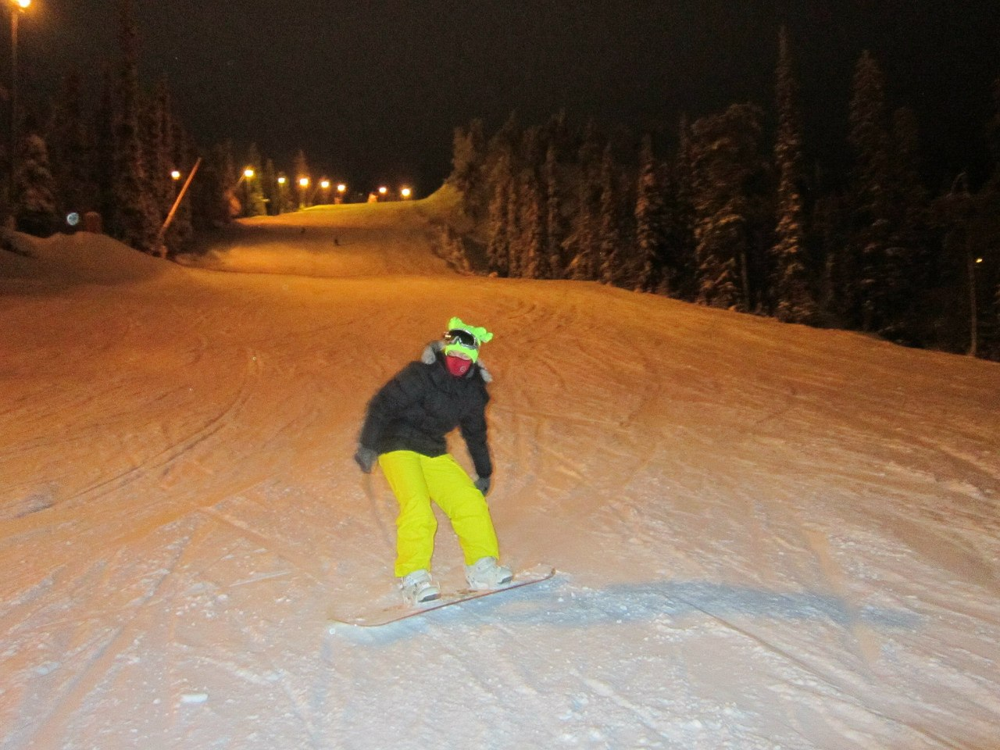
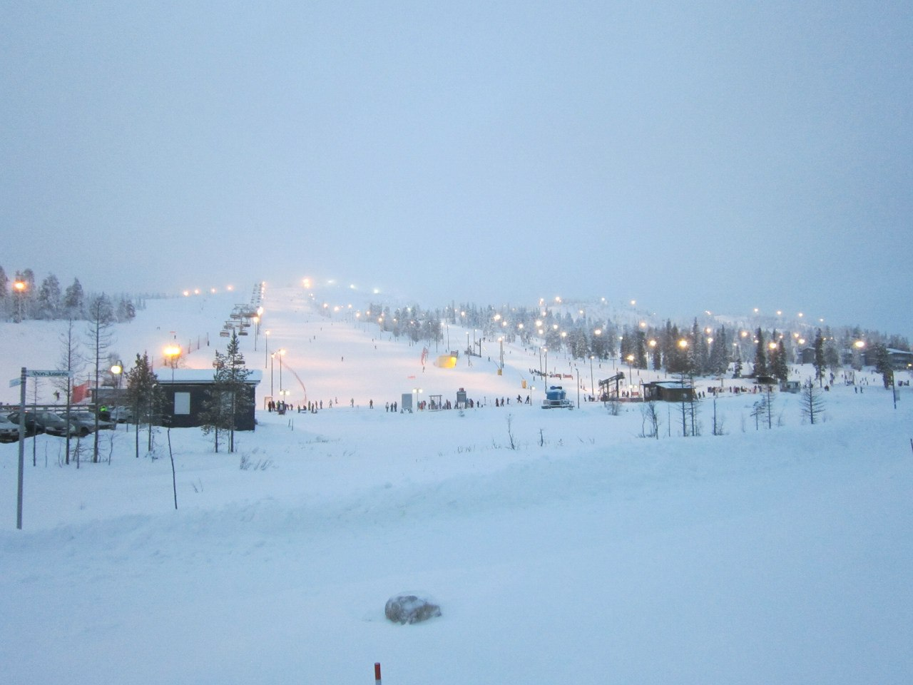
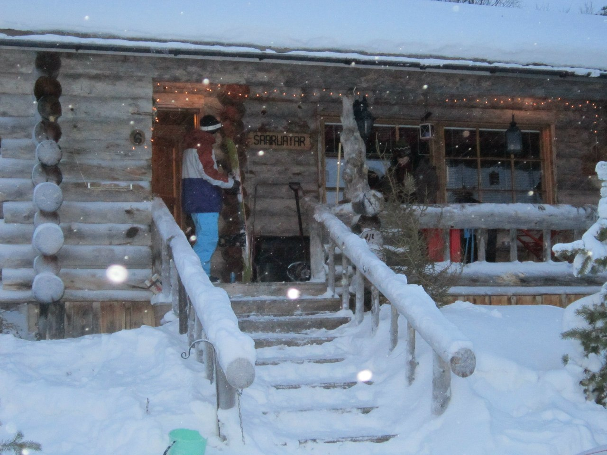
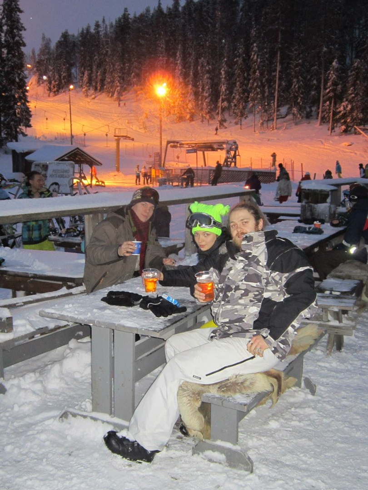
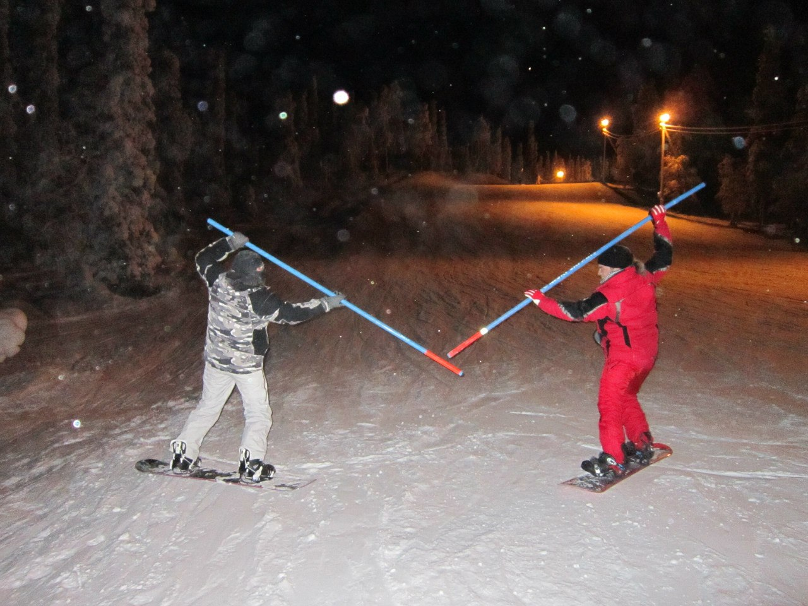
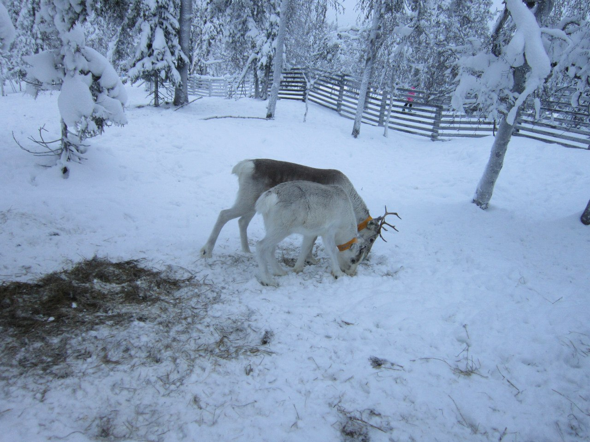
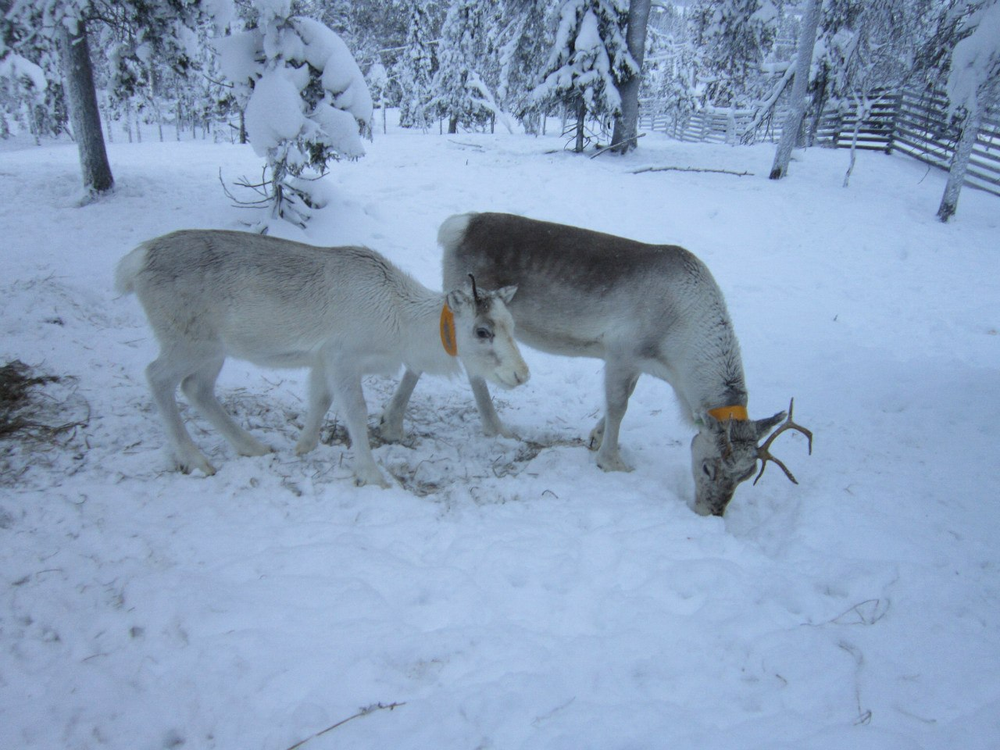

Сноубординг

Вот одно из моих главных хобби - сноуборд. Занимаюсь этим долго, порядка... 7 лет, наверное. Бывала много где, но больше всего мне понравилось в Финляндии, в деревне Руука.
Это очень туристическое место. Как наши курорты у моря, но они рботают приоритетно зимой. Там есть деревня под склоном, в которой мы с друзьями и поселились
Так и всякие магазины и кафешки наверху. Хитрость в том, что даже если ты приехал не кататься, то тебе все равно нужно будет подняться наверх к этим заведениям. Можно на подъемнике за деньги, но можно и пешком бесплатно. Но приезжают в эту деревню исключительно сноубордисты и лыжники, потому что склоны бомбезные!

Однажды наверху черной трассы мы с друзьями очень устали. Зашли в кафе, купили покушать. А потом купили и пива. И совершили открытие. Оказывается, физику в школе нужно было учить. И алкоголь наверху пьянит сильнее, чем внизу. Мы не ожидали такой подставы от баночки пива.
Ну а поскольку это был верх черной трассы, нам пришлось спускаться, кто как смог. Никто не смог. Я вообще застряла ногами в дереве вверх тормашками. Мне повезло, что я прокладывала дорогу для друзей, и они меня сняли. Но как я туда попала... не знаю. Наверное, мне было слишком весело, и я прыгала. А пацаны решили, что самое время для поединка!
Мы спустились к оленьей ферме. Такие они лапочки))
 